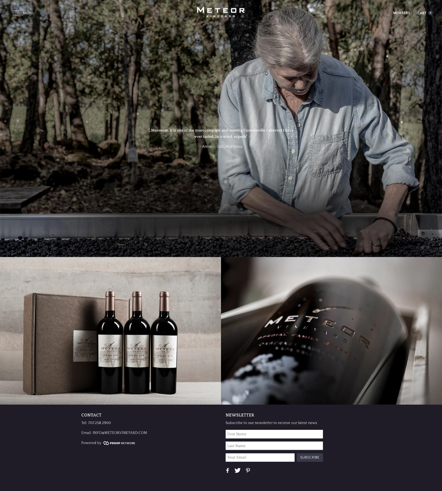
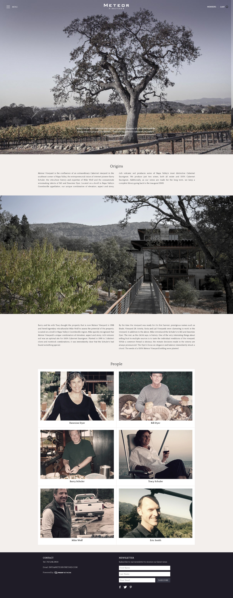

A prolific winemaker in the Napa Valley stretching back to 1999, Meteor's web presence was unfortunately still based in that era. We changed that.
Starting with a complete visual overhaul, while establishing a members only section was the first step in bringing the site up to date. Connecting to Bridge allows the client access to an analytics package specifically tailored to wine producers.
 